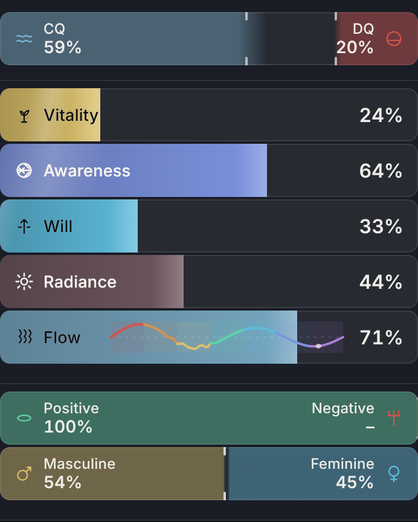
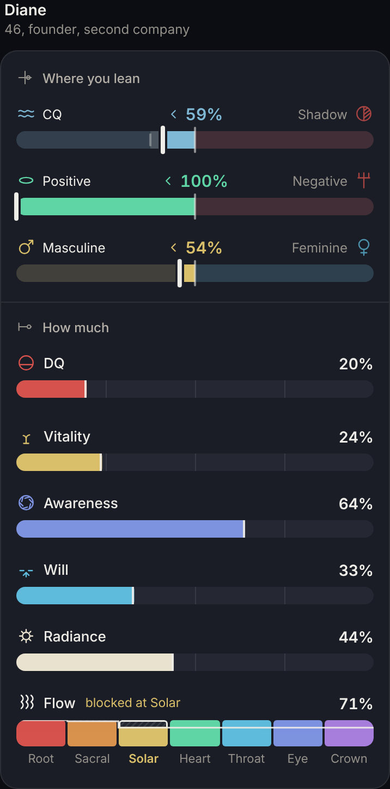
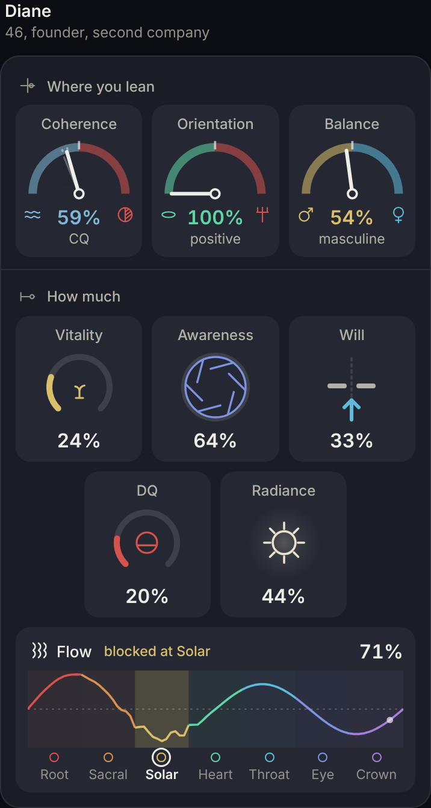
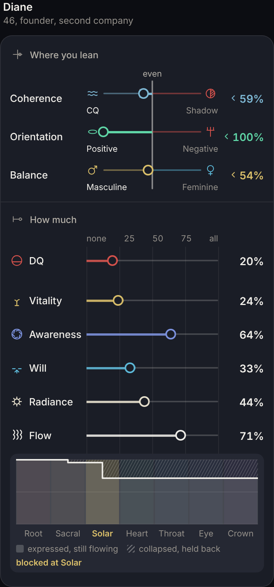
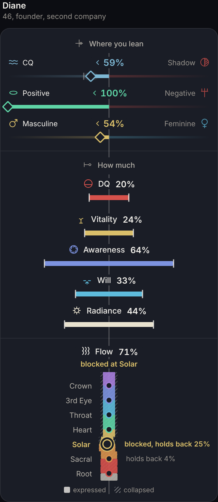
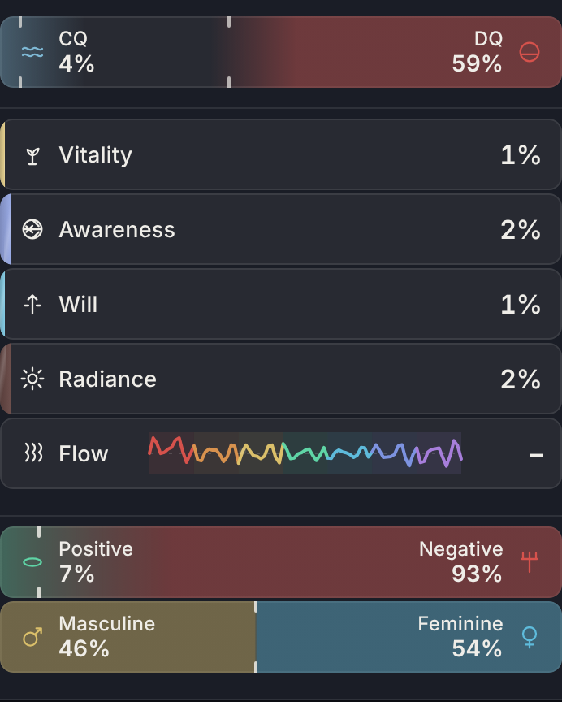
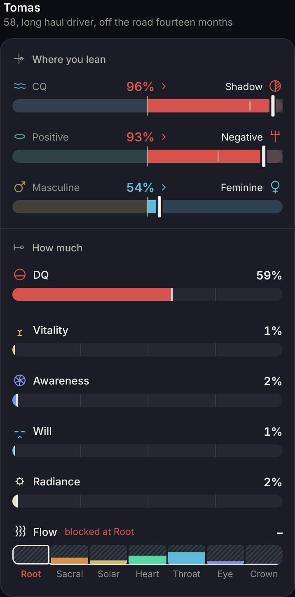
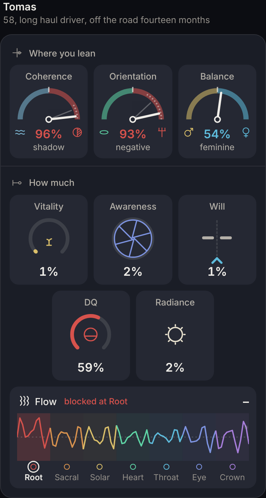
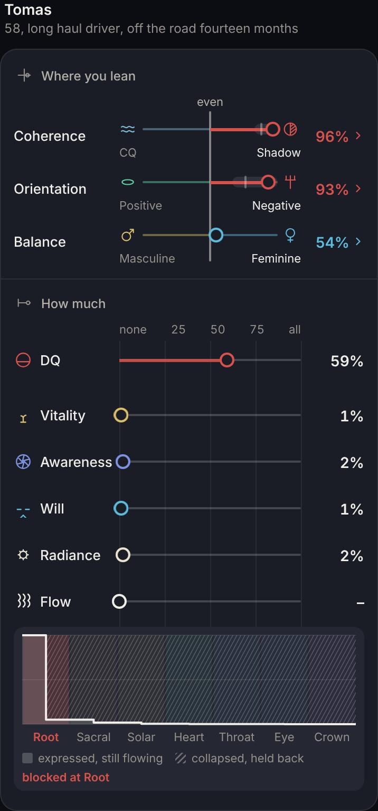
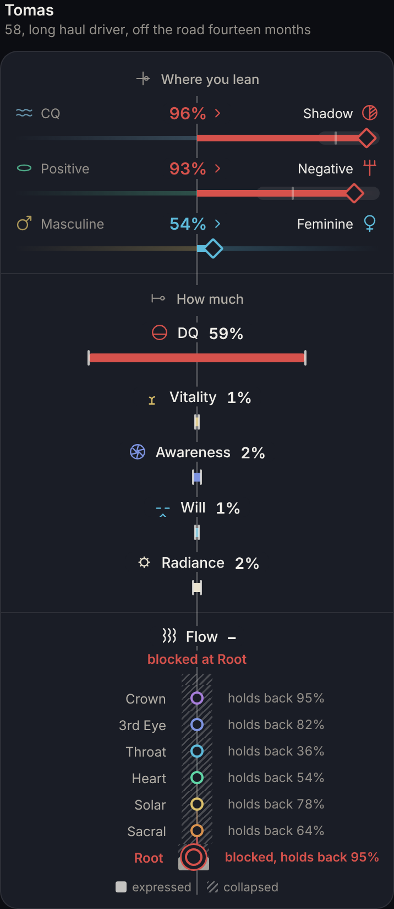

Dual readings, four ways, graded
His brief, 27 October: the pairs need a centre line at 50 and one mark for where the person leans. The amounts run from none to all. Flow shows expressed, collapsed and where it is blocked, awareness reads as an aperture, will as willpower. Symmetrical, evenly spaced, colours and values that make sense, readable at a glance. Each mockup was reviewed three times by the art director, the UI UX architect, the technical director and the animation director, with the creative director deciding. The rounds are written on each page.
Diane, phone width, the current rail first





Tomas, the heaviest profile in the sample





Why r4 leads
- The finding. The rail draws a lean and an amount with the same shape, so the eye cannot tell "which way" from "how much" without reading the words.
- The cause. Not the bars. One component, rbPair, was stretched over pairs that sum to 100 (Orientation, Balance) and a pair that does not (CQ and DQ), and the fill grammar of the amounts was borrowed for both.
- The move. r4. Off the midline means a lean, the same on both sides means an amount, and the midline becomes the flow channel, root to crown, pinched at the held seat. In the code it is a new rbPair and rbRow drawing in ui/component.js and the rail block in ui/ui.js around render's pair and bar calls. No arithmetic changes. rbPairSet's tween and rbDrift carry over.
- The cost. Two to three days, including design.js floors, collide.js and monitor.js baselines for the rail. It is the tallest of the four. Measured 27 October at phone width for Diane: today's rail 431 pixels, r1 676, r2 624, r3 720, r4 777, cut from 851 in round 3. It is the largest cost here. The centred amounts also take one sentence to learn.
- The grade. The rail goes from C+ to A-. r1 is the fallback at about a day for B+.
- Sample. All 16 people in PEOPLE, read at HEAD 87dd2cdf. Ten of the 16 read 100% positive, so every design had to hold a mark pinned at the end, and all four do.
What each concept keeps and breaks
| Ruling | r1 | r2 | r3 | r4 |
|---|---|---|---|---|
| RB / PC, two colours pressing in from the ends | replaced by his words today | replaced | replaced | replaced |
| RB, every row one bar, "every element looks completely different" was the complaint | kept, one bar | broken | kept, one line | kept, one beam |
| OG, words inside the fill | words above | words above | words beside | words above |
| OX, the swing range as the edge | kept, as a band | kept, on the arc | kept, as a band | kept, as a band |
| OM, Flow as a sine wave | replaced by cells | kept, ported whole | replaced by a step line | replaced by the channel |
| OT colours, halo and pitchfork; OV words CQ and DQ; 25 October Positive and Negative | kept in all four | |||
| CQ and DQ on one bar (OT, RB) | changed in all four: CQ is drawn against its own self-read shadow, and DQ is an amount. See the open question below. | |||
Open, and his
- CQ and DQ. He said the pairs "would belong under CQ, DQ". Read here as: they are the same family as CQ and DQ. The engine does not make CQ and DQ add to 100, so a line at 50 between them would be invented. All four draw CQ against its own complement, the self-read shadow, and move DQ under How much. If he wants CQ and DQ as one pair with a centre, that needs a new figure the engine does not compute, for example CQ's share of CQ plus DQ, and it is his to rule.
- The word. He said benign and malignant today. On 25 October he ruled "we're changing from benign and malignant to positive and negative". The mockups keep Positive and Negative.
- Orientation carries nothing of its own yet. No one in the roster has a story cue that lands, so for all 16 Orientation is a function of CQ alone: 100% positive at CQ 50 and over. Two rows are saying one thing until stories land.